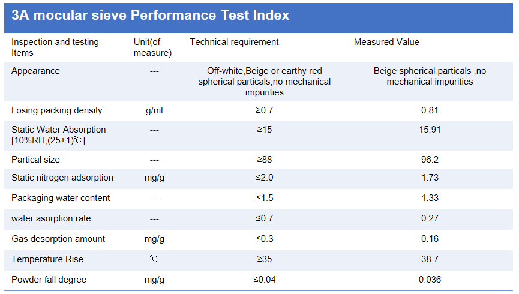

Filled inside the spacer bar, it deep-dries the cavity and keeps the dew point below -60 °C.

3A molecular sieve is an adsorbent filled inside the space bar, featuring a hard and smooth surface, good abrasion resistance, high strength, low capacity, and excellent adsorption capacity. It shows no peeling, breakage, or powder shedding during transportation and use. It has a rapid warming effect and a faster adsorption rate. Even if the ambient temperature fluctuates between -40 and 40℃, its adsorption capacity can still exceed 20%. It is capable of deep drying of the glass, ensuring that the leakage point is below -60℃.
CHENSHUO 3A molecular sieve is full, uniform, hard, and wear-resistant. It has high strength and low capacity, and possesses excellent adsorption capacity. Its performance meets the requirements of GB/T 10504-2017.
25kg/CTN; 5Bags/CTN; 5kg/Bag Particle size: 0.5-0.9mm; 1.0-1.5mm; 1.5-2.0mm
It is non-hazardous and suitable for transportation by various means. Please store it in a cool and dry place at a temperature below 27°C. The expiration date is 12 months, and it is recommended to use it within 6 months after purchase.
This product is non-toxic and will not cause damage to the human body. It is necessary to ensure that the storage environment is dry and the operation method meets the specifications when using. The molecular sieve should be used as soon as possible after opening to avoid moisture absorption failure. This product is granular and should be kept out of the reach of children to prevent them from accidentally swallowing it.


Applied on both sides of the spacer to replace hot-melt butyl in IGU lines.
View details →
EVA pads that isolate glass panes during storage and transport.
View details →
Seamless connection for non-bending spacer frames, with anti-retraction teeth.
View details →
Strong, precise connectors for bendable spacers of every IGU specification.
View details →